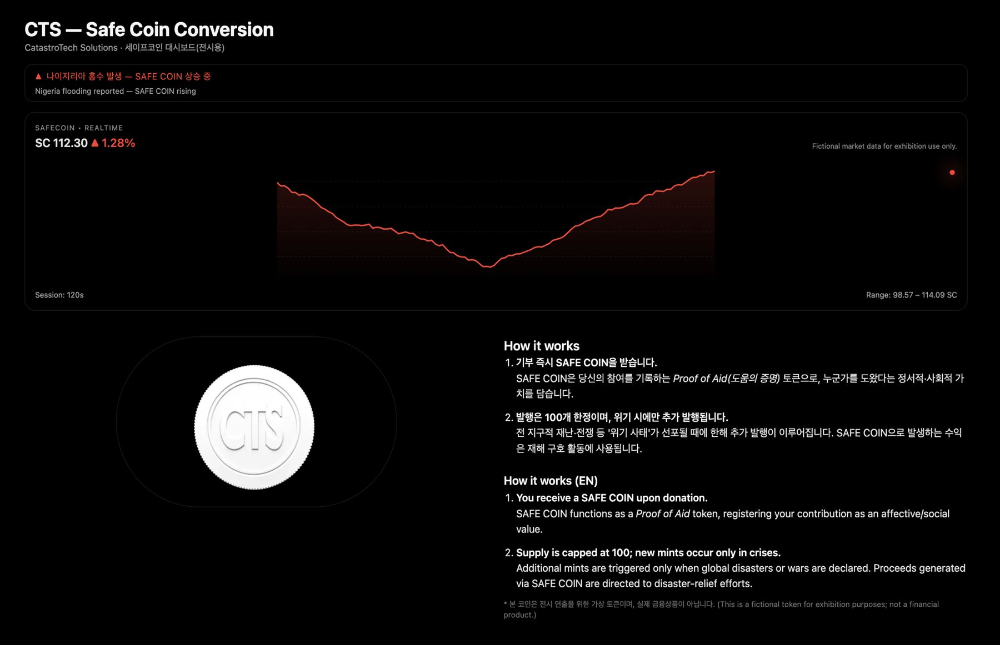

ESD
감정수집 드론
Emotion Sentinel Drone
당신의 불안을 측정 가능한 데이터로 바꿉니다.
Turns your anxiety into measurable data.

CTS를 찾아주신 여러분께.

위기의 시대,
CTS가 함께합니다.
안녕하십니까. CTS(CatastroTech Solutions) 홈페이지를 찾아주신 여러분께 진심으로 감사드립니다.
오늘날 재난은 더 이상 예외적인 사건이 아닙니다. 전쟁과 기후위기, 감염병은 일상이 되었고, 그 속에서 사람들의 불안 또한 끊임없이 커지고 있습니다. CTS는 이러한 시대적 변화를 위협이 아닌 기회로 인식하고, ‘재난을 기회로 바꾸다’라는 비전 아래 위기 대응 기술을 개발해 왔습니다.
CTS의 5대 핵심기술 ESD, SCC, SMF, VSI, SZS는 고객 여러분의 불안을 측정 가능한 데이터로 전환하고, 안전과 안정을 하나의 서비스로 제공합니다. 또한 CTS 부설 잔여데이터 관리국을 통해 기존 시스템이 분류하지 못한 영역까지 조사하며, 새로운 가치를 발굴하고 있습니다.
CTS는 앞으로도 고객 중심의 혁신과 지속가능한 성장을 통해 위기의 시대를 선도하는 글로벌 리더로 자리매김하겠습니다. 재난이 계속되는 한, CTS의 성장도 멈추지 않을 것입니다.
여러분의 변함없는 관심과 성원을 부탁드립니다. 감사합니다.
In an age of crisis, CTS is with you.
Thank you for visiting CTS (CatastroTech Solutions).
Today, disaster is no longer an exceptional event. War, climate crisis and pandemics have become part of everyday life, and with them, people’s anxiety continues to grow. CTS sees this change not as a threat but as an opportunity. Under our vision, “From catastrophe to opportunity,” we have developed technologies for crisis response.
Our five core technologies, ESD, SCC, SMF, VSI and SZS, turn your anxiety into measurable data and deliver safety and peace of mind as a service. Through the CTS Residual Data Management Bureau, we also investigate what existing systems have failed to classify, uncovering new value.
CTS will continue to lead the age of crisis as a global leader through customer-centered innovation and sustainable growth. As long as disasters continue, so will our growth.
We look forward to your continued interest and support. Thank you.
지금, CTS의 5가지 핵심기술을 체험하세요.
Experience the 5 core technologies of CTS now.
Emotion Sentinel Drone
당신의 불안을 측정 가능한 데이터로 바꿉니다.
Turns your anxiety into measurable data.


Safe Coin Conversion
재난이 오르면, 가치도 오릅니다.
When disasters rise, value rises.

Smile Manufacturing Frame
교정 프레임을 통해 표준 미소를 설정하세요.
Set your standard smile with the SMF.

Visual Shock Integration
두려움은 규격화됩니다.
Fear is standardized.

Safe Zone Shelter
위기의 시대, 심신의 안정을 즐기세요.
In an era of crisis, enjoy peace of mind.
분류하기 어려운 것들을 조사하고 판정합니다.
CTS 잔여데이터 관리국은 시스템이 분류하지 못한 것들을 어떻게 상품화할 수 있는지 연구하는 CTS 부설기관입니다. 관리국은 전국의 잔여지역을 조사하며, 대전은 첫 조사지입니다.
The CTS Residual Data Management Bureau is a CTS affiliate that researches how what systems fail to classify can be turned into products. The Bureau surveys residual sites nationwide. Daejeon is its first survey site.
「CTS – 보류된 시간」
「CTS – 선택받지 못한 미래」CTS – An Unchosen Future
「CTS – 보통의 자세」CTS – The Normal Pose
관리국에는 처분 권한이 없습니다. ‘폐기’ 판정은 존재하지 않습니다.
2025. 10. 20 – 11. 3 · 부산
CTS의 5가지 핵심기술을 직접 체험한 첫 팝업스토어.